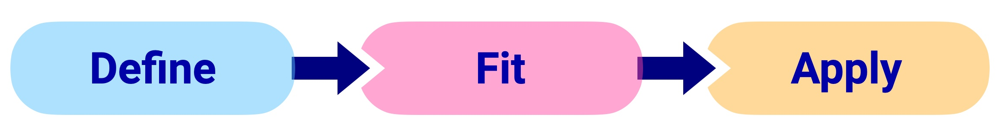

Why Scikit-Learn?#
Scikit-Learn brings modern machine learning tools to chemometrics—making workflows more flexible, scalable, and easy to prototype and validate.
Flexibility: Works with various chemometric models and preprocessing methods.
Integration: Can be combined with domain-specific tools for spectral analysis, multivariate statistics, and experimental design.
Scalability: Can handle small laboratory datasets as well as large-scale industrial data.
Easy Experimentation: Rapid prototyping with different algorithms and preprocessing techniques.
What is Scikit-Learn?#
Scikit-learn (sklearn) is an open-source machine-learning library built on top of NumPy, SciPy. It offers a unified API for various machine-learning techniques, including:
Supervised learning: Regression, classification, and ensemble methods
Unsupervised learning: Clustering and dimensionality reduction
Data preprocessing: Feature scaling, encoding, and transformation
Model evaluation: Cross-validation, metrics, and hyperparameter tuning
Scikit-learn is widely used in research and industry due to its simplicity, efficiency, and extensive documentation.
A Broad Toolbox of Models and Methods#
One of the biggest strengths of scikit-learn is its vast selection of models and tools. Some key categories include:
Regression#
Linear Regression (
LinearRegression): A simple yet effective model for continuous target variables.Partial Least Squares (
PLSRegression): A powerful method often used in chemometrics.Support Vector Regression (
SVR): Effective for nonlinear relationships.
Classification#
Logistic Regression (
LogisticRegression): For binary and multi-class classification.Random Forest (
RandomForestClassifier): A robust ensemble method for better accuracy.Support Vector Machines (
SVC): Effective for complex decision boundaries.
Dimensionality Reduction#
Principal Component Analysis (
PCA): Extracts the most important features in your dataset.Non Negative Matrix Factorization (
NMF): Useful for signal decomposition.t-SNE (
TSNE): Helps visualize complex high-dimensional data.
Preprocessing Tools#
Feature Scaling (
StandardScaler,MinMaxScaler): Essential for models that rely on distance metrics.Encoding Categorical Data (
OneHotEncoder,LabelEncoder): Transforms categorical variables into numerical format.Feature Selection (
SelectKBest,RFE): Helps choose the most relevant variables.
The scikit-learn workflow#
Scikit-learn follows an intuitive three-step process outlined in the figure below:
{kind=link}
Define: Configure the model/preprocessing parameters.
Fit: The model learns patterns from training data using
fit()Apply: The fitted model processes new data using either:
transform()for preprocessing steps and unsupervised learningpredict()for supervised learning models (classification and regression)
Let’s see two examples, one for a preprocessing and one for a regerssion model. First, import the required modules:
from sklearn.preprocessing import StandardScaler
from sklearn.cross_decomposition import PLSRegression
Preprocessing with StandardScaler:
# 1. Define the preprocessor
scaler = StandardScaler(with_mean=True, with_std=False)
# 2. Fit the preprocessor to the data
scaler.fit(X)
# 3. Apply the processor to the data
X_scaled = scaler.transform(X)
# ... or to new new data
X_new_scaled = scaler.transform(X_new)
Building a PLSRegression model:
# 1. Define the PLS model with two components
pls = PLSRegression(n_components=2)
# 2. Fit the PLS model to the training data
pls.fit(X_scaled, y)
# 3. Apply the PLS model to new data
y_pred = pls.predict(X_new_scaled)